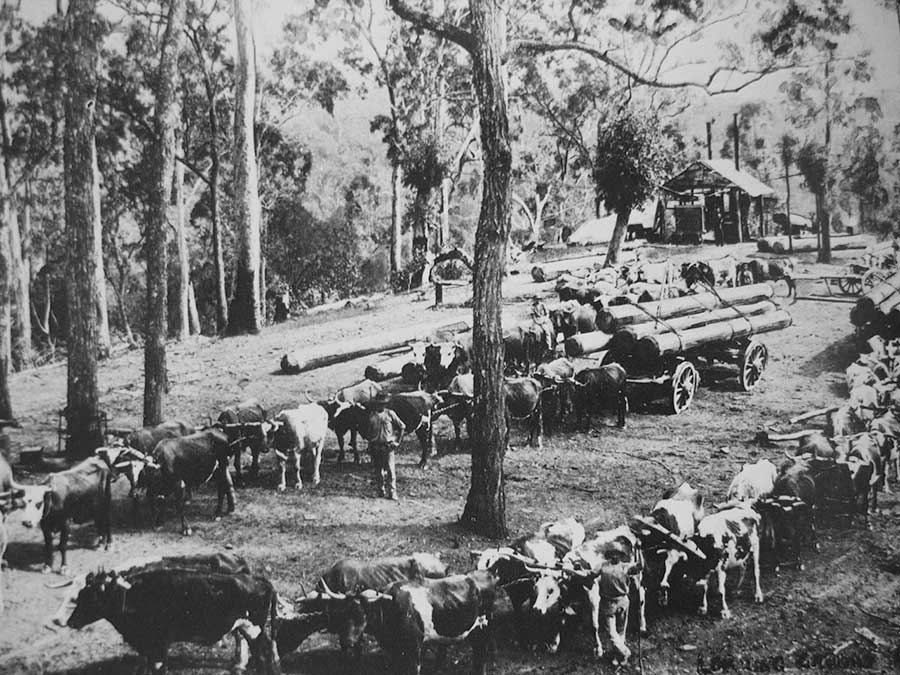
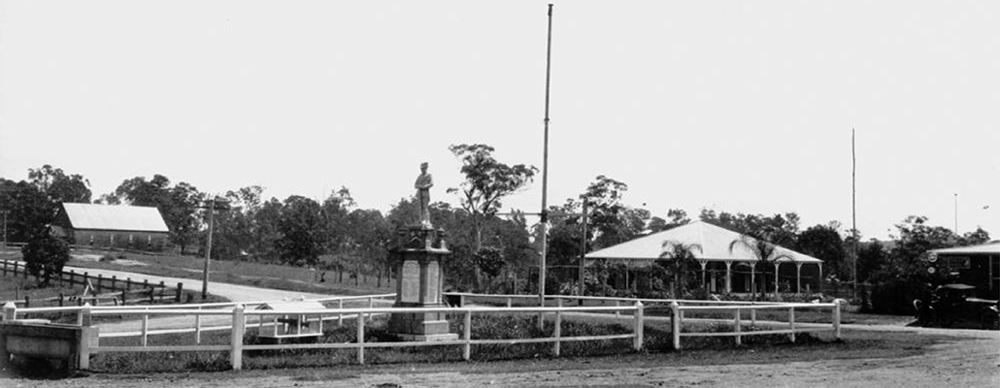
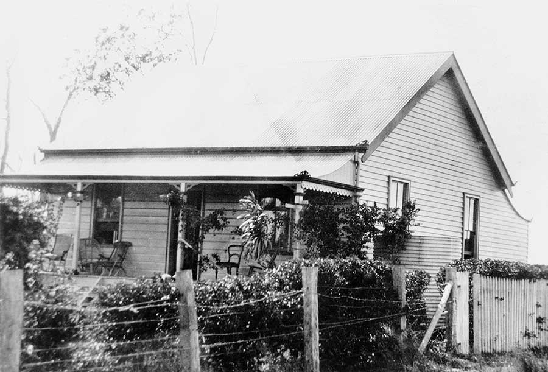

Kenmore is a suburb of Brisbane, Queensland, Australia. It is located 10 kilometres south-west of the Brisbane CBD. The suburb was not always as developed as it is today. Back in the year 1840 the area was used for cattle grazing around the areas of fig tree pocket and Kenmore.
European settlement began in the 1840s, lots of land around the Kenmore area where released to the new settlers from britain in 15 to 20 acre lots.
In the year 1880 a man named Andrew Todd purchased 100 acres of land in the area. He named the property Kenmore Park after his birthplace in Scotland. The name kenmore grew in popularity and was eventually used to name the suburb.
Cattle were extremely common in 1900s
In the 1890s Queensland Parliment approved the construction of a rail line from Indooroopilly to Brookfield running through the southern side of kenmore. This rail line was never constructed.
Shire of Moggill War Memorial, at the intersection of Moggill Road and Brookfield Road, Kenmore 1925
Kenmore Park original house c1880s